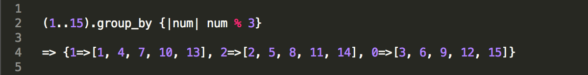
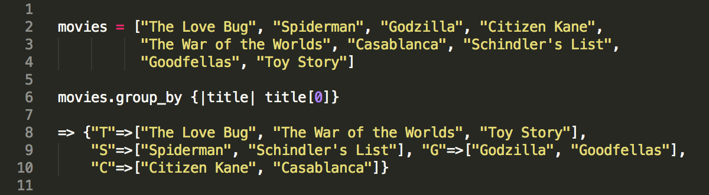

Enumerable Groupie Say What?
by Ernie Salazar
Posted on May 15, 2014
Ruby is a dynamic programming language that offers many classes or modules for the programmer to utilize, such as String, Integer, Array, and Hash. One that is quickly becoming one of my go to favorites is the Enumerable module. It gives us some nifty methods in which we can traverse, search, sort and even alter elements within a collection class.
Today we’re going to learn about one of its methods, group_by, otherwise known as Enumberable#group_by. It’s a handy little guy that can power through an array or hash and group its elements. The method itself usually takes a block of code that tells it what exactly to group by. Its output is a new hash or collection with the keys you selected and values that match up to them. Perhaps it’s easier seen than said, let’s take a look at a few examples.
Example using a collection of numbers:

We took a group of numbers from 1 through 15 and called the group_by method. The block we passed to the method is telling it to loop through those numbers. It then grouped the numbers if they were divisible by 3. The method then created a hash with those groups. Numbers that were evenly divisible by 3 went to the :0 key, numbers with a remainder of 1 went to the :1 key, and finally numbers with a remainder of 2 went to the :2 key.
Example using a collection of strings:

This time we created a collection of movie titles. We then called the group_by method on the movie array. The block we passed to the method is telling it to loop through the titles. It then grouped them by their first letter. The method then created a hash with those groups. The first letter of the titles became the keys and titles themselves, the values.
Learn More
As you can see, it’s not hard understanding how useful group_by can be. If you’re looking to loop through collections and organize their elements, this method should be in your toolbox. If you want to learn more, explore these resources.
- Ruby Documentation - Core 2.1.1 - Enumerable
- Global Nerdy - Enumerating Enumerable: Enumerable#group_by
Check them out and enjoy. Global Nerdy has a concise explanation of other enumerable methods if you're interested. I was!